Zebra Shift guide · 15 pictures
Blood gas and lab patterns
For a blood gas, start with the pH, then decide whether the CO₂ or the bicarbonate explains it, then calculate the anion gap: Na⁺ − (Cl⁻ + HCO₃⁻), normally about 8–12 mmol/L.
For other panels, look for the pattern rather than any single number. H marks a high result, L a low one, and * an abnormal result without a numeric range.
High anion gap metabolic acidosis with respiratory compensation

pH low, bicarbonate very low, CO₂ blown off. Anion gap = 134 − (101 + 7) = 26: a raised gap, here from ketones.
Often confused with: Normal anion gap metabolic acidosis · Acute respiratory acidosis · Metabolic alkalosis
In the game: Diabetic Ketoacidosis
Acute-on-chronic respiratory acidosis (raised bicarbonate)
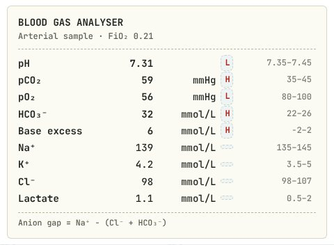
High CO₂ with a low pH is respiratory acidosis. The bicarbonate is already high, so the kidneys have been compensating for a long time: acute on chronic. Target saturations 88–92%.
Often confused with: Acute respiratory acidosis, uncompensated · Metabolic acidosis · Respiratory alkalosis
In the game: COPD Exacerbation
Acute respiratory alkalosis
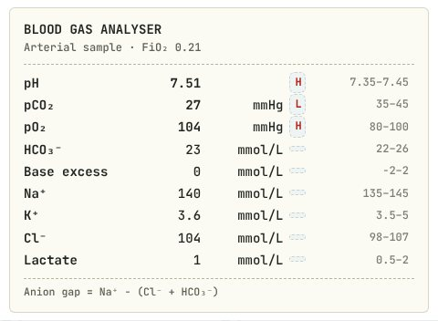
High pH with a low CO₂ and a normal bicarbonate: acute respiratory alkalosis from over-breathing. Normal oxygen helps, but exclude PE and DKA first.
Often confused with: Metabolic alkalosis · Respiratory acidosis · Mixed metabolic acidosis and respiratory alkalosis
In the game: Panic Attack
Acute respiratory acidosis from hypoventilation
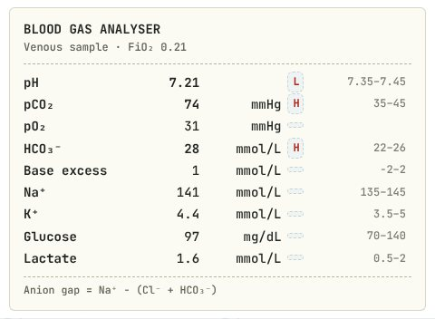
Very high CO₂, low pH and a near-normal bicarbonate: acute hypoventilation with no time to compensate. Pinpoint pupils complete the picture.
Often confused with: Chronic compensated respiratory acidosis · Metabolic acidosis · Normal blood gas
In the game: Opioid Overdose
Normal pO₂ with a saturation gap: methaemoglobinaemia
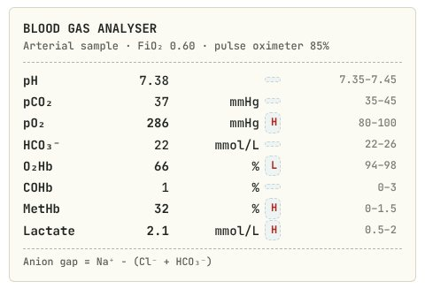
The pO₂ is high on oxygen, yet the pulse oximeter reads about 85%. Co-oximetry shows methaemoglobin 32%. Treat with methylene blue.
Often confused with: Type 1 respiratory failure · Carbon monoxide poisoning · Type 2 respiratory failure
In the game: Methaemoglobinaemia
High anion gap acidosis with a raised osmolal gap: toxic alcohol
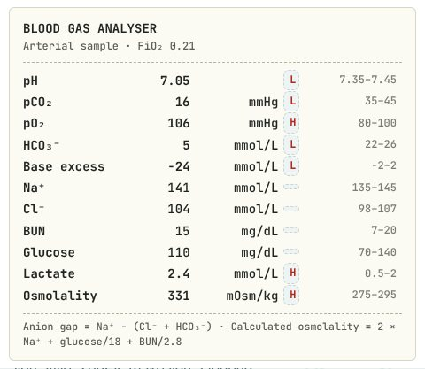
Anion gap = 141 − (104 + 5) = 32. Calculated osmolality 2×141 + 110/18 + 15/2.8 ≈ 293, so the osmolal gap is about 38. Glucose and lactate do not explain it: methanol or ethylene glycol.
Often confused with: Diabetic ketoacidosis · Lactic acidosis from shock · Normal anion gap acidosis
In the game: Methanol Poisoning
Normal anion gap metabolic acidosis with hypokalaemia
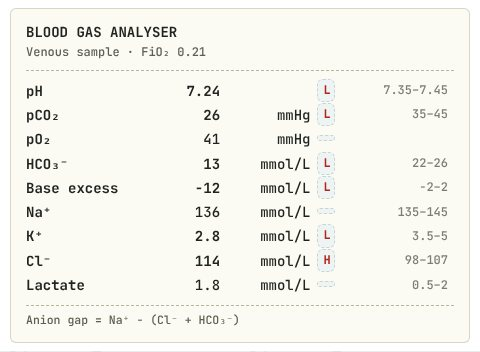
Anion gap = 136 − (114 + 13) = 9, which is normal, with a high chloride and low potassium: bicarbonate lost in stool.
Often confused with: High anion gap metabolic acidosis · Metabolic alkalosis from vomiting · Respiratory acidosis
In the game: Cholera
High protein with a normal cell count (albuminocytological dissociation): Guillain–Barré
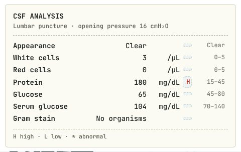
The protein is four times the upper limit, yet there are almost no white cells and the glucose is normal. That split is typical of Guillain–Barré a week or more into the weakness.
Often confused with: Bacterial meningitis · Viral meningitis · Tuberculous meningitis
In the game: Guillain–Barré Syndrome
Lymphocytes, very high protein and very low glucose: tuberculous meningitis
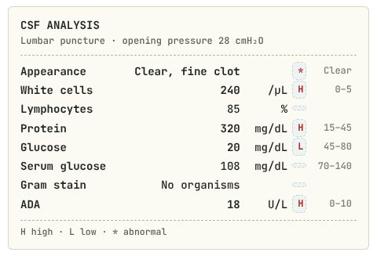
Hundreds of white cells, mostly lymphocytes, a protein above 300 mg/dL and a glucose under a fifth of the blood level, with no organisms on Gram stain. Weeks of headache make TB the answer.
Often confused with: Bacterial meningitis · Viral meningitis · Guillain–Barré syndrome
In the game: Tuberculous Meningitis
Lymphocytes and red cells with a normal glucose: viral encephalitis, think HSV
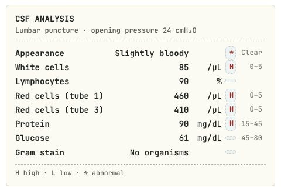
A lymphocytic CSF with a normal glucose points to a virus. Red cells that do not clear from tube 1 to tube 3 fit the bleeding, necrotising temporal lobe of HSV. Start aciclovir without waiting for the PCR.
Often confused with: Bacterial meningitis · A traumatic tap only · Tuberculous meningitis
In the game: HSV Encephalitis
Low sodium with high potassium: think adrenal insufficiency
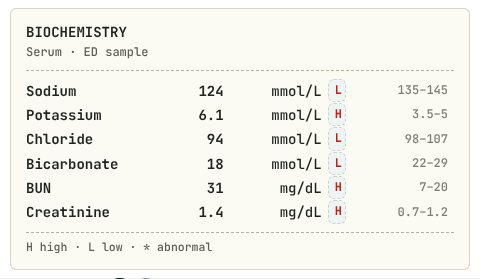
Hyponatraemia together with hyperkalaemia, a raised urea from dehydration and a mild acidosis: the pattern of missing aldosterone and cortisol. In a shocked patient give hydrocortisone straight away.
Often confused with: SIADH · Pseudohyperkalaemia · Chronic kidney disease
In the game: Addisonian Crisis
High potassium, phosphate and urate with low calcium: tumour lysis syndrome
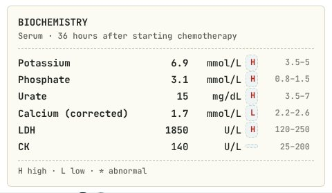
Dying tumour cells release potassium, phosphate and nucleic acids (urate); phosphate then binds calcium. The CK is normal, so this is not muscle breakdown.
Often confused with: Rhabdomyolysis · Primary hyperparathyroidism · Normal results
In the game: Tumour Lysis Syndrome
Dipstick blood with no red cells on microscopy: myoglobinuria
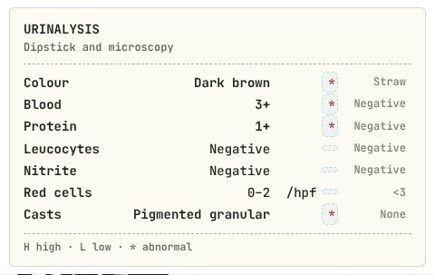
The dipstick reacts to the haem in myoglobin as well as in red cells. Strongly positive blood with no red cells under the microscope, in dark urine, means muscle breakdown.
Often confused with: Glomerulonephritis · Urinary tract infection · Kidney stone
In the game: Rhabdomyolysis
Very high glucose and osmolality without ketoacidosis: hyperosmolar hyperglycaemic state
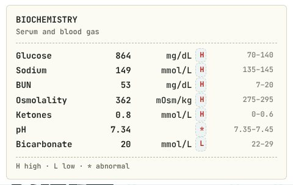
A glucose over 600 mg/dL and an osmolality over 320, but ketones under 3 and a near-normal pH and bicarbonate. Rehydrate slowly; this is not DKA.
Often confused with: Diabetic ketoacidosis · Hypoglycaemia · Diabetes insipidus
In the game: Hyperosmolar Hyperglycaemic State
Respiratory alkalosis plus a high anion gap metabolic acidosis: think salicylate
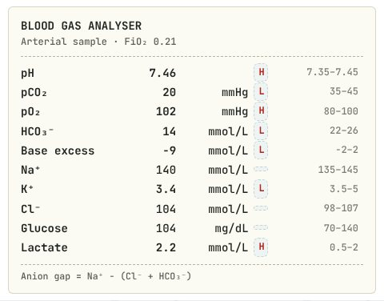
The pH is near normal, but the CO₂ is far too low and so is the bicarbonate. Anion gap = 140 − (104 + 14) = 22. Two primary disorders at once, with tinnitus and over-breathing: aspirin.
Often confused with: Pure respiratory alkalosis · Diabetic ketoacidosis · Normal blood gas
In the game: Salicylate Overdose